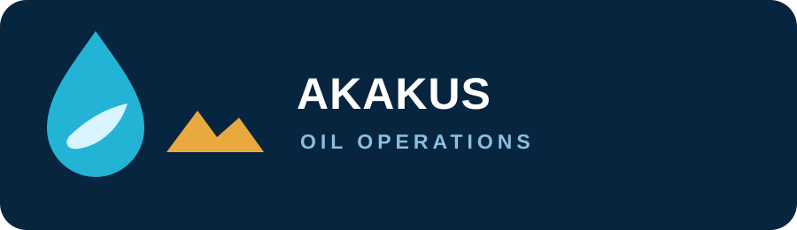
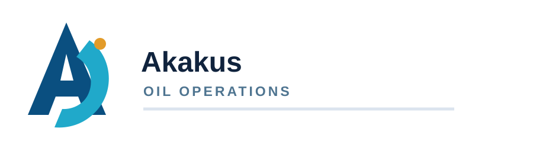
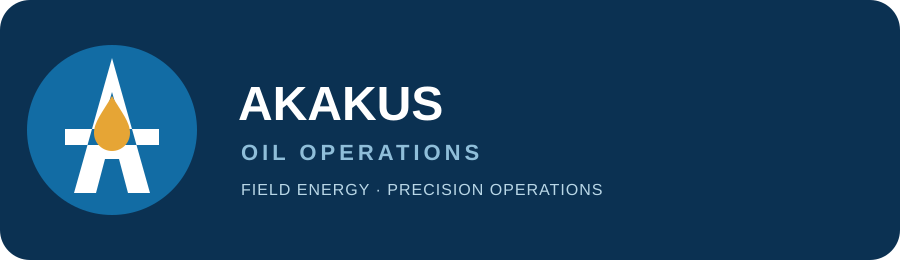
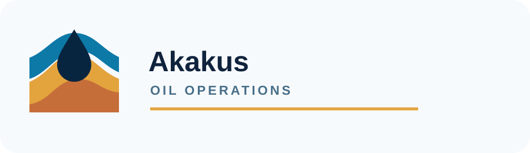
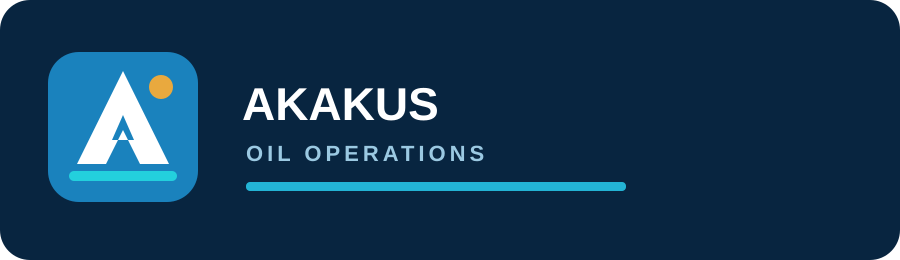

Akakus Oil Operations
Five logo directions inspired by the compact operations-intelligence reference.
1. Desert Drop

2. AO Monogram

3. Wellhead

4. Akakus Horizon

5. Operations Mark

Five logo directions inspired by the compact operations-intelligence reference.




